Tout le monde peut apprendre à coder!
De l'école primaire à l'université et au-delà ... Boostez vos connaissances techniques
Nos stages et activités extra-scolaires sont conçus pour Équiper les étudiants avec des compétences pratiques
Apprenez avec les meilleurs
Pourquoi Coder?
Une compétence essentielle
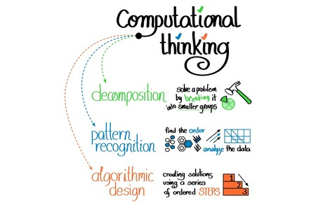
Il est desormais essentiel de savoir programmer, quelles que soient vos ambitions de
carrière.
Coder, c'est comme lire au siècle précédent: c'est la nouvelle alphabétisation.
.
Les pays du monde entier ont commencé à le reconnaître et ils ajoutent l'informatique au
programme des écoles élémentaires.
En savoir plus >
Pas seulement Coder
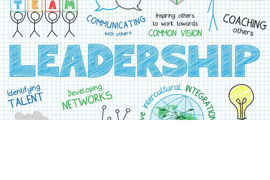
Apprendre à programmer renforce les compétences scientifiques.
Les élèves acquerront également les compétences essentielles
telles que la logique et l'esprit critique, la capacité à aprehender des problèmes
complexes, l’autonomie, le respect de la diversité,
la créativité, le travail d’équipe et la communication.
En savoir plus >
40% des emplois perdus?

L'intelligence artificielle et l'automatisation mettent en péril un grand nombre
d'emplois à tous les niveaux de qualification. Les emplois actuels seront remplacées par de
nouveaux emplois nécessitant de nouvelles compétences.
Souhaitez-vous travailler avec l'I.A. ou en concurrence avec elle? Même
avec des ingénieurs qui font le gros du travail pour vous, vous aurez toujours à comprendre
en quoi consiste la programmation.
En savoir plus >
Curriculum
Junior Coders
2x 2 heures / semaine: ¥42,000 / mois
Web App Builders
2x 2 heures / semaine: ¥36,000 / mois
Data Science Explorers
2x 2 heures / semaine: ¥36,000 / mois
🇬🇧 Parler Anglais
2x 2 heures / semaine: ¥25,000 / mois
Cours hebdomadaires
- 15h à 17h
- 16h à 18h
- 17h à 19h
- 10h30 à 12h30
- 13h30 à 15h30
- 15h30 à 17h30
- 16h30 à 18h30
Notre équipe
Avery
J'ai toujours eu une passion pour les langues, ayant étudié la linguistique et le japonais à
l'Université de Sydney.
J'ai écrit et interprété des comédies originales pendant plus de deux ans, et animé une
stand-up comedy
d'une heure au Melbourne Fringe Festival 2019,
j'ai aussi co-écrit, réalisé et composé des productions théâtrales indépendantes pour la
scène de Melbourne.
J'écris aussi des histoires, des poèmes et les paroles de mes compositions musicales depuis
plus de 10 ans.
J'aime plus que tout aider les enfants à trouver de nouvelles façons de s'exprimer,
quelle que soit la forme que cela puisse prendre.
Ma fascination pour tout ce qui est japonais m'a finalement conduit à Kyoto, où je suis
ravie de
rejoindre Kyoto Lesson!
Alex
Apprendre à coder a été l'un des accomplissements les plus enrichissants de ma vie.
Il y a plusieurs années, j'ai appris Python par moi-même comme moyen d'automatiser les
tâches répétitives.
En 2019, j'ai déménagé à Kyoto et participé à un bootcamp de coding pour adultes,
qui, d'ailleurs, était dans le même bâtiment que Kyoto Lesson! Après cela, j'ai enseigné aux
étudiants
dans les classes suivantes et trouvé cette expérience incroyablement amusante.
Au cours de ma carrière, j'ai exploré la scène tech de la Silicon Valley et construit des
accessoires de cinéma à Los Angeles.
Maintenant je me retrouve dans une startup à Kyoto, contribuant aux projets web de
l'entreprise et
je fait du coaching en anglais pour notre PDG. J'aime travailler avec divers groupes de
personnes et
leur donner les outils dont ils ont besoin pour réussir. À Kyoto Lesson, je souhaite
partager ma soif d'apprendre et relever de nouveaux défis.
Ashley
J'ai toujours aimé enseigner. J'ai encadré des élèves quand j'étais au lycée et j'ai
travaillé
dans une école de conversation anglaise depuis quatre ans.
L'enseignement est l'une de mes plus grandes passions, mais j'aime aussi l'art, le design,
la littérature, la culture,
et les gens en général.
Je suis mi-japonaise et mi-américaine. J'ai grandi en Caroline du Sud jusqu'à l'âge de 13
ans et j'ai déménagé
au Japon pour le premier et le deuxième cycle du secondaire.
J'ai déménagé à Kyoto après avoir été accepté à l'Université Doshisha. J'étudie encore la
sociologie là-bas tout en travaillant à temps partiel.
Pour moi, l'enseignement de l'anglais au Japon est trop academique et axe sur les examens.
Aprendre une langue doit être quelque chose d'amusant et je veux partager cela avec les
enfants qui essaient d'apprendre
L'anglais au Japon.
Je suis ravie de travailler dans un tout nouvel environnement et de combiner étude et jeu.
Louis
J'étudie actuellement au Lycée Français International de Kyoto. L'informatique est l'une de
mes specialisations.
Je suis français et japonais et parle couramment les deux langues. J'ai grandi en Europe et
j'ai déménagé
à Kyoto il y a environ 10 ans.
J'ai une passion pour le football et les véhicules rapides. C'est seulement au moment où
j'ai été en age de conduire que j'ai compris
à quel point les belles motos et voitures coutaient chères!
Et c'est l'une des raisons pour lesquelles j'ai décidé d'étudier par moi-même à la fois la
finance et l'informatique,
deux domaines dans lesquels je pensais pouvoir rapidement monétiser mes connaissances et mon
expertise.
Le point positif est que j'ai vraiment beaucoup aimé ces deux matières et depuis que je veux
continuer à apprendre et
plus important encore, je souhaite également partager ces connaissances avec les autres.
C'est ce qui m'a amené
à l'enseignement et j'ai hâte d'enseigner la programmation à d'autres étudiants aussi!
Kris
En grandissant, certains enseignants m'ont vraiment donné envie de devenir à mon tour
enseignant.
J'ai donc étudié pour obtenir un double master en éducation de l'enfance et TESOL,
et après un voyage au Japon en 2012, j'ai su ce que je voulais pour mon avenir.
En ce qui concerne les enfants, je pense qu'ils peuvent tout réaliser et qu'ils ne sont
limités que par
leur imagination et leur dynamisme. Je crois que mon rôle d'éducateur est d'aider
à libèrer leur potentiel et leur faire apprendre par le jeu,
les histoires, la musique, etc.
J'aime explorer et apprendre de nouvelles choses et je suis un peu un rat de bibliothèque.
(J'étudie rigoureusement
J.R.R. Tolkien dans mon temps libre), et je suis également passionné d'arts martiaux,
de cinéma et de musique.
J'adore les nouvelles opportunités et je suis toujours à la recherche de moyens d’apprendre
et d’améliorer les méthodes
pédagogiques pour accompagner la génération à venir, en lui donnant la confiance nécessaire
pour devenir citoyens du monde
Tora
J'aime à la fois apprendre les langues et les enseigner en général. Je parle couramment
l'Anglais et
le Japonais, et j'étudie également le Français et le Coréen car j'aimerais être
un orateur multilingue. J'ai eu une exposition à l'anglais depuis l'âge d'un an et j'ai
travaillé en tant que tuteur d'anglais et assistant au lycée au cours des quatre dernières
années.
Je suis né à Saitama, mais j'ai grandi à l'étranger. J'ai passé quatre ans à Hong Kong,
trois ans
en Inde et deux ans à Dubaï. J'ai déménagé à Kyoto pour le lycée.
J'ai étudié à Houston pendant un an dans le cadre d'un programme d'échange au lycée, et j'ai
également étudié
à l'Université de British Columbia avant d'obtenir mon baccalauréat.
Je suis actuellement étudiant en quatrième année à l'Université de Ritsumeikan et je me
spécialise dans les
relations internationales.
Parler est le moyen le plus important d'étudier l'anglais. La raison pour laquelle j'aime
les langues vient
du fait que j'ai beaucoup de plaisir à avoir des conversations avec des personnes qui ont eu
des experience différentes.
J'ai aussi hâte de partager la mienne!

David
Je travaille avec des enfants depuis plus de 30 ans et je me concentre principalement sur le
developpement de la créativité des enfants
et leur sens du jeu. J'ai également de l'expérience en informatique et plusieurs autres
domaines scientifiques. J'ai commencé à coder à l'âge de 10 ans et je fait parti de la
première
génération de "petits génis de l'informatique".
Mon travail avec les enfants inclus l'enseignement parascolaire, le conseil sur les stages
linguistiques et l'enseignemant en maternelle
aux États-Unis et au Japon. Mon expérience avec les ordinateurs comprend des applications en
cobol, html,
javascript, entre autres. Je suis également actif en tant que personnel d'une société
scientifique
Japon.
Je suis né et j'ai grandi en Europe, mais j'ai déménagé aux États-Unis à l'âge de 7 ans.
Je parle la langue des signes américaine, le français, le portugais et dans une moindre
mesure le japonais.
Je vis avec ma femme et ma fille à Kyoto.
Alan
Je pense que la programmation est une compétence essentielle que tous les enfants devraient
acquérir, dès
leur plus jeune age.
Ainsi, un peu apres que nous ayons déménagé à Kyoto avec ma femme et mes quatre enfants, je
me suis mis a la recherche d'une bonne
école de programmation pour mes enfants. Je voulais une école où les enfants pensent par
eux-mêmes et
apprennent en faisant.
Comme je ne trouvais rien de satisfaisant, j'ai décidé de prendre les choses en main et
de lancer ma propre école de programmation.
Et c'est ainsi que Kyoto Lesson est née.
Je suis Français et j'ai étudié aux États-Unis. Avant de déménager à Kyoto, j'ai travaillé
comme
trader pendant plus de 15 ans à Tokyo, Hong Kong et Singapour.
Au cours de ma carrière en banque, j'ai dû apprendre à coder car cela m'a permis
d'automatiser
plusieurs tâches répétitives que je devais faire dans le cadre de mon travail.
Depuis, je n'ai jamais arrêté de coder.
Testimonials
"L'informatique a tendance à être exclusivement adressé aux plus matheux et aux plus
scientifiques.
Pourtant, bien qu'étant en filière Littéraire, j'ai pu durant le stage expérimenter une
petite approche à l'informatique
qui a aiguisé mon intérêt pour cette discipline.
Ce fut une expérience enrichissante et probablement très valorisable, sur le long-terme.
Je remercie Alan pour sa patience et sa pédagogie!"
"Qui aurait pensé que coder pourrait être amusant! C'est le cas quand on apprend avec Alan!
Nous pouvons améliorer les jeux populaires, créer des sites Web ou relever des défis
pratiques. C’est toujours un grand plaisir pour mes deux enfants de participer à l’un des
camps de programmation de Alan"
"Mon fils adore Kyoto Lesson. Alan est gentil et patient.
Il apprend aux élèves à penser. Je dois avouer que je ne comprends pas vraiment tout ce
que les élèves font, même en écoutant leur présentation. Cependant je suis certaine d'une
chose: ce que ce que les élèves apprennent est important pour leur avenir."

Mon fils a participé deux fois au stage de programmation. Contrairement aux autres écoles de
programmation, Kyoto Lesson enseigne aux élèves les bases de l’informatique de manière très
facile à comprendre, comme par exemple l'encryption d’informations pour l'envoie de
courriers
électroniques sur Internet ainsi que la méthode algorithmique de tri. Ce n'est pas seulement
programmer un jeu sous Scratch. Les élèves apprennent bien au-delà.
En ce qui concerne l'anglais, la plupart des élèves viennent d'écoles internationales avec
un
très bon niveau d'anglais et n'ont aucun problème à suivre le cours. De plus, Alan explique
de manière simple et facile à comprendre. Beaucoup d'élèves étant japonais, même si vous
n'êtes pas bon en anglais, vous pouvez participer.
Le dernier jour de stage, les élèves font une presentation en anglais
devant les parents, afin de présenter leur projet et expliquer ce qu'ils ont retenu de leur
enseignement.
Chaque jour pendant le stage, Alan nous a envoyé par courrier électronique
un compte-rendu très complet de ce que les élèves avaient fait pendant la journée.
Ceci est tres intéressant à lire pour les parents et permet de suivre ce que font les
élèves.
J'ai inscrit mes enfants à l'école de programmation car je pensais que cela pourrait être
plus
utile pour leur avenir plutôt que de jouer aux jeux vidéo.
Au début, ils ont appris les bases de la programmation en bloc et des animations dans
Scratch.
Ensuite, ils ont évolué vers des compétences plus avancées tout en s’amusant à modifier le
jeu
vidéo Minecraft. Les élèves doivent réfléchir au code qu’ils écrivent pour changer ou faire
quelque chose dans le jeu vidéo. Après cela, les étudiants ont commencé à créer leur propre
site
web. Quand j'écoute mes enfants, je sens qu'ils s'amusent beaucoup en façonnant leurs
pensées
pour construire tout ce qu'ils imaginent.
C'est Alan qui enseigne. Il sait alterner avec talent entre un enseignement individuel et le
travail / les discussions en groupe. Il enseigne de manière très fluide que ce soit en
anglais
ou en français. La riche expérience et les connaissances d'Alan apportent à la classe un
enseignement international de pointe. C'est un avantage incroyable pour la classe.
La capacité de favoriser et de créer cette pensée logique préparera les enfants pour
l'avenir et
leur apportera des compétences qui sont très pertinentes à l'ère de l'intelligence
artificielle.
Après quelques mois passés à Kyōto Lessons, mon fils de 8 ans a commencé à comprendre
comment créer des jeux simples sous Scratch, créer des artefacts dans Minecraft et son
propre petit site internet. Son intérêt ne cesse de grandir grâce aux projets pratiques,
stimulants à la fois la pensée logique et la créativité.
Les moments de divertissement apparemment décontractés, sont autant de leviers efficaces
permettants d'acquerir les connaissances académiques et une pensée structurée.
Très fortement recommandé à tous les enfants curieux!
Les compétences en informatique, en particulier les compétences en programmation,
sont très utiles pour créer des applications Web.
Je cherchais donc une bonne école capable d'enseigner cela à mon fils.
Alan, le fondateur de Kyoto Lesson, a acquis des compétences de programmation très pratiques
et extrêmement pertinentes grâce à son expérience professionnelle et a ainsi pu concevoir
un curriculum idéal. En plus de cela, c'est un très bon pédagogue.
Alan enseigne la logique de base de la programmation à travers des projets très pratiques.
Contrairement aux autres écoles de programmation fréquentées par mon fils dans le passé,
Alan prend le temps nécessaire pour permettre aux étudiants de trouver les solutions
par eux-mêmes, plutôt que de leur faire copier des lignes de codes sans réfléchir.
Les choses qu'il veut leur enseigner sont la pensée logique et la recherche.
Voilà ce que j'aime beaucoup dans cette école!
Coding Boot Camps
Programme d'immersion intensif
Nos stages de programmation sont offerts pendant
les vacances scolaires
. Ces stages sont des cours intensifs, 3 heures par jour pendant 5 jours.
Les étudiants travailleront en équipe sur un projet qu'ils essaieront de terminer d'ici la
fin du
stage.
Le but de ces stages est de trouver une solution à un problème du monde réel auquel une
entreprise, une organisation à but non lucratif ou liée à l'intérêt d'un étudiant.
Les étudiants commenceront avec Scratch, un langage de programmation visuel développé par
l'un des
laboratoire de recherche du Massachusetts Institute of Technology (MIT) avant de se plonger
dans
JavaScript et Python, deux langages de programmation largement utilisés par les développeurs
de logiciels.
- Niveau 0: Mon premier jeu construit avec Scratch
- Niveau 1: Immersion dans Scratch
- Niveau 2: Modifier Minecraft
- Niveau 3: Créer mon propre site Web
- Niveau 4: Créer ma propre application
- Niveau 5: Site Web dynamique: JavaScript
- Niveau 6: Immersion dans JavaScript
- Niveau 7: Créer le jeu avec PyGame
- Niveau 8: Immersion dans Python
Créer des produits réels
Stages d'Anglais 🇬🇧
Programme intensif d'Anglais
Des stages en anglais sont proposés pendant les vacances scolaires.
Les camps sont des cours intensifs, 3 heures par jour, sur 5 jours:
Du lundi au vendredi de 9h30 à 12h30
L'accent est mis sur la compréhension orale et avec comme objectif
de rendre chaque élève à l'aise lorsqu'il interagit en anglais.
Tous nos professeurs sont de langue maternelle anglaise.
Les étudiants seront divisés en groupes en fonction de leur niveau d'anglais.
Nous avons un maximum de 9 élèves par classe (par enseignant).
Les camps de vacances en anglais sont organisés autour de projets d'une semaine,
- Journal fantastique
- Cinéastes
- Manga Mania
- Et plus encore ...
De plus, il y aura du temps pour d'autres activités diverses, telles que:
- Jeux,
- Puzzles,
- Ateliers linguistiques,
- Chansons,
- Temps de lecture, ...
Coût du programme: 20 000 ¥ / semaine (15 heures de cours)
+ ¥ 3 000 frais d'inscription uniques (pour les nouveaux étudiants uniquement),
qui comprend une évaluation individuelle en Anglais par visio-conference.
Lieu: Community Lab N5.5 (Google Map ici)
529 Izumicho, Shimogyo Ward, Kyoto, 600-8188, Japan
〒600-8188 京都府京都市下京区和泉町529
Journal fantastique
Pour le journal fantastique, les enfants créent leur propre journal.Tout au long du projet, les enfants assument divers rôles, tels que rédacteur, journaliste, copieur, éditeur, photographe, artiste et éditeur.
En même temps, les enfants s'attribuent des départements tels que les événements actuels, le théâtre, les sciences, opinions.
Porter différentes casquettes donne aux enfants la possibilité d'exprimer et de développer leurs compétences linguistiques et expressif capacité dans différents contextes.
- En tant que rédacteurs en chef, les enfants discutent du contenu et prennent des décisions ensemble, encourageant le travail d'équipe et leadership.
- En tant que journalistes, ils créent du contenu dans des domaines qui les intéressent.
- En tant que rédacteurs en chef, ils utilisent et développent des compétences linguistiques spécifiques.
- En tant qu'artistes, ils développent leur imagination et leur capacité à établir des liens.
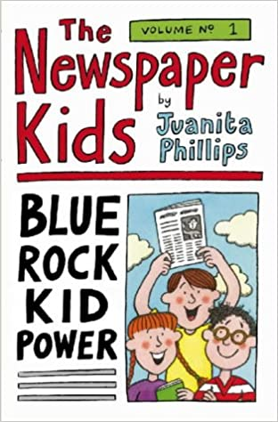
Prototypes Hardware
Trois filières complémentaires
Le matériel informatique (hardware) et l'électronique sont des composants essentiels de l'informatique.
Au fur et à mesure que vous améliorerez vos compétences en programmation, vous devrez comprendre quels sont les différentes limitations matérielles
auxquelles vous êtes exposé afin d'optimiser l'execution de vos programmes.
L'Internet des objets (ou IoT) devenant un domaine de recherche important
globe, le prototypage matériel est particulièrement pertinent de nos jours et un ajout logique à notre programme.
Notre programme de formation sur le hardware vise à offrir à nos étudiants une expérience de création pratique.
Nos étudiants fabriquent des objets réels, du dessin au prototype réel et notre programme est divisé en trois parties principales:
- Impression et modélisation 3D
- Electronique (Micro: Bit Block Editor, Arduino, Raspberry Pi ...)
- Robotique (Kamibot, Lego Mindstorms, Drones ...)
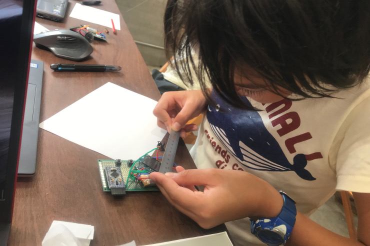
Ce programme est enseigné en partenariat avec Kyoto Makers Garage (KMG)
Il aura lieu au studio de KMG. (À 500m de KRP, Lien Google Map)
où les étudiants pourront travailler sur les stations et outils de création les plus courants:
- Imprimantes 3D: stéréolithographie (Formlab) et modélisation des dépôts fondus
- CNC (une machine de découpe commandée par ordinateur utilisée pour couper divers matériaux durs, tels comme bois, composites, aluminium, acier, plastiques ...)
- Machines de découpe laser
Lieu:
〒600-8846
京都府京都市下京区朱雀宝蔵町73-1
73-1 Sujakuhozocho, Shimogyo Ward
Kyoto, 600-8846, Japan
En savoir plus >
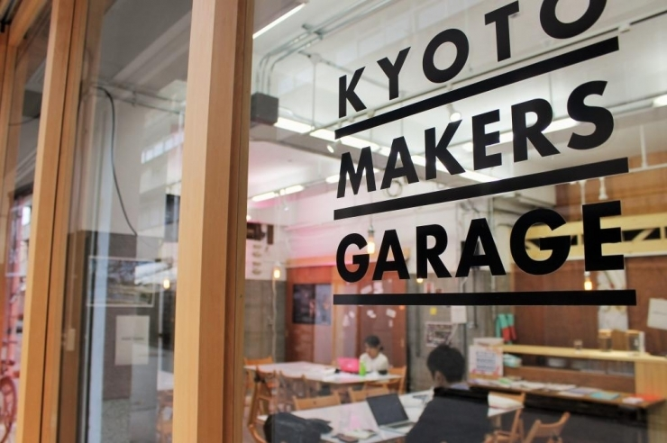
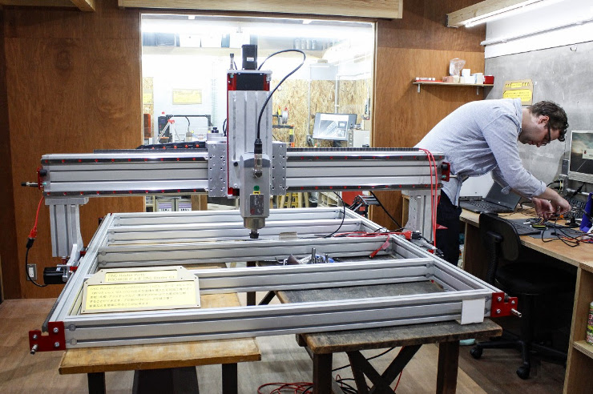
Stages pratiques
Notre premier Boot Camp est une introduction à l'impression 3D.
Il s'agit de l'une des technologies clés du futur, permettant aux entreprises de réduire leurs coûts et de
marché,
produire des pièces plus solides et plus légères, améliorer l'efficacité et résoudre une myriade d'autres
défis.
C’est pourquoi nous pensons qu’il est important que nos élèves comprennent
technologie dans l’économie mondiale du XXIe siècle.
En savoir plus >
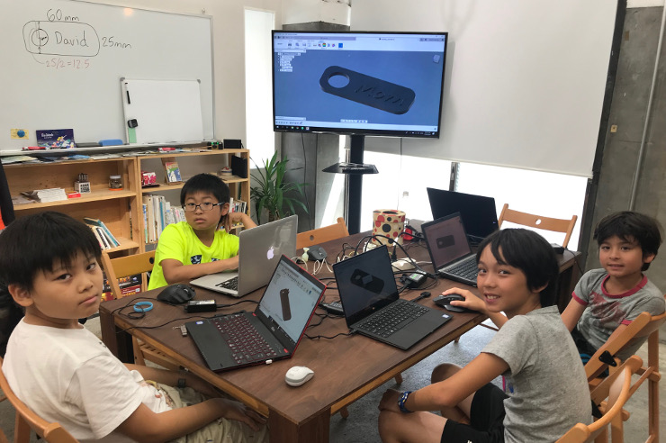
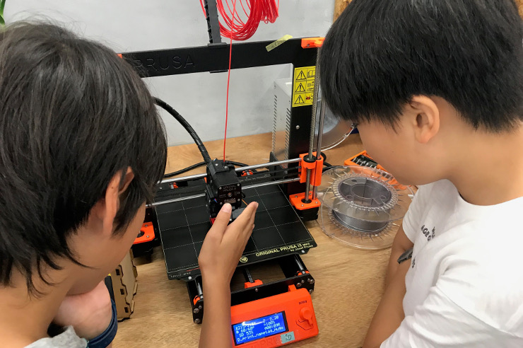
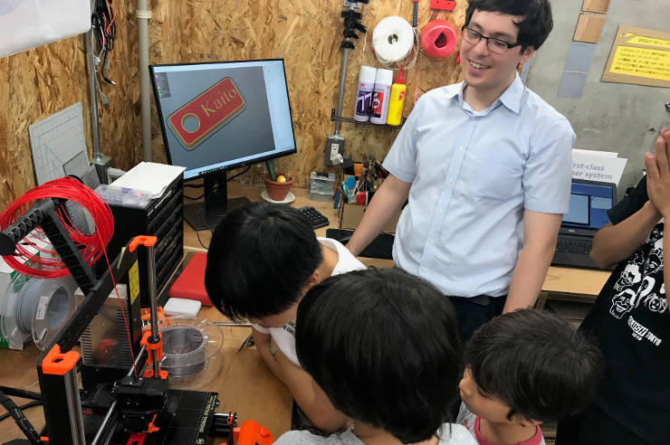
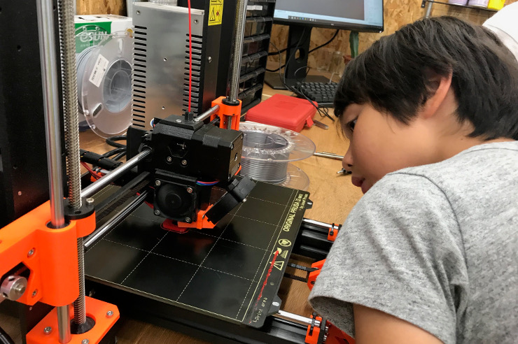

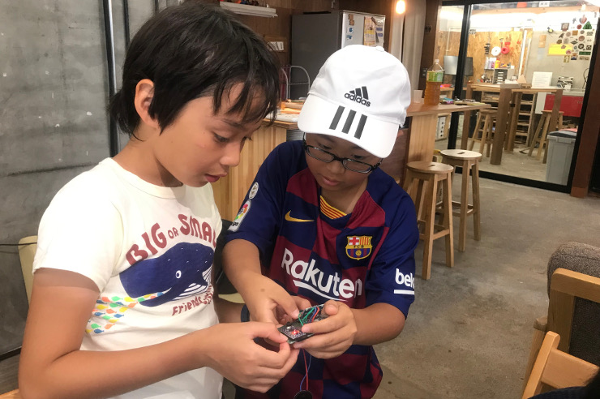
Entrepreneurs Tech
Curriculum de pointe
Notre programme vise à amener les étudiants non techniques à un niveau qui leur permet construire indépendamment leur propre produit. Au cours de ce periple, ils apprendront les meilleures approches pour resoudre des problèmes et les techniques pour évaluer rapidement le potentiel de leur idée, tester leur hypothèse, minimiser leur risque, concevoir et créer un MVP (Minimum Viable Product), puis itérer à partir de là. Nous nous concentrons uniquement sur les outils les plus pertinents et les plus à jour utilisés dans l'industrie tech.
- Apprenez à créer des sites Web
- Créer une application back-end avec JavaScript
- Créer une application frontale avec React
- Analyser les données avec Python
- Analyser les données avec SQL
- Premiers pas de machine learning
Nos entrepreneurs tech apprendront à écrire du code prêt pour la production et à diriger une equipe. Au cours de ce programme de immersif dans le monde de la startup, ils experimenteront différents rôles (ingénieurs, designers, chefs de produit, chefs de projet) et ils auront également une chance être l'un d'eux s'ils le souhaitent. À la fin du sprint, chaque équipe fait une démonstration de sa progression de face du chef de produit. À la fin du cours, les équipes auront l'occasion de présent leur produit final.
Deux programmes, un apprentissage flexible
Nos entrepreneurs tech sont souvent des étudiants universitaires à temps plein avec une majeure non technique.
Nous avons ainsi conçu notre programme de la manière la plus flexible possible afin de garantir qu'il
soit compatible avec leur horaire déjà chargé.
Chaque session se compose d'un cours suivi d'un court projet à réaliser par les étudiants
à la maison ou en classe, seul ou en groupe.
Grâce à notre programme, les étudiants acquerront deux compétences essentielles: la création d'applications Web
(JavaScript) ainsi que des outils de décision basés sur les données (Python).
Chaque compétence est divisée en 3 sous-compétences, afin que nos entrepreneurs tech puissent apprendre à
les leurs
rythme. Bien qu'il soit préférable de compléter ces 3 sous-compétences dans un court intervalle de temps, nous
aussi
comprendre que cela n'est pas toujours possible lors des études pour un autre diplôme en
parallèle.
Pour compléter chaque compétence, nos étudiants pourront en outre choisir entre deux programmes:
- Programme intensif Boot Camp (3 h + 3 h / jour, 5 j / semaine pendant 12 semaines, 600 000 ¥)
- Programme de formation continue (4 h + 4 h / jour, 2 jours / semaine pendant 24 semaines, 675 000 ¥)
Une nouvelle classe commencera une fois qu'au moins six étudiants se seront inscrits. N'hésite pas à nous contacter pour plus de détails.
À propos
Construire en priorité, la Théorie au second plan
Pour réussir quelque chose, vous devez être entouré d'experts qui vous guident tout au long de votre parcours.
C’est exactement ce que nous avons fait avec la conception de notre classe immersive dans le monde de la startup. À la place de
l approche traditionnelle où les élèves s'assoient dans une salle de classe formelle, apprennent d'abord la théorie et résolvent
des problèmes fictifs, nos étudiants sont essentiellement des ingénieurs logiciels qui travaillent pour une startup et
créer des produits réels. Ils devront résoudre des problèmes du monde réel en décomposant, en recherchant
indépendamment
ainsi qu'en apprenant à gérer leurs projets. La partie la plus académique de l'enseignement ne viendra que
si nécessaires pour faire avancer leurs projets. Cet environnement, ces technologies et ces processus
sont identiques aux startups et aux entreprises prospères du monde entier.
En savoir plus >
La scène Tech
Notre fondateur a construit au fil des ans un vaste réseau au sein de l'industrie tech. Étant
en contact permanent avec les individus les plus brillants dans ce domaine permettent à Kyoto Lesson de fournir une éducation de pointe aux
ses étudiants. Tous les
les outils et les techniques que nous utilisons sont toujours alignés sur les meilleures pratiques de l'industrie
et toujours mis à jour.
De plus, Kyoto Lesson offre une occasion unique à ses étudiants d'entrer directement en
contact avec les leaders de la tech: pour les classes plus avancées, nous travaillerons sur des projets en collaboration avec certains des
plus grandes entreprises tech (Google, Apple, Facebook, Amazon, Uber, Airbnb ...), les petites startups (locales et étrangères) ainsi que
avec des organisations à but non lucratif.
En savoir plus >
Projet Google >
À propos du fondateur
Alan est français et a étudié dans une prestigieuse université américaine.
Il est titulaire de trois masters en ingénierie, statistiques et administration des affaires (MBA)
ainsi qu'un DEA en probabilités et finance.
Alan a travaillé en tant que trader d'options pour plusieurs banques d'investissement depuis 15
ans au Japon, à Hong Kong et à Singapour. Passionné par la programmation et un expert en python, Alan était également
en charge, dans le même temps, d'automatiser toutes les activités du front office.
Il est également le co-fondateur de HealthCo, une MedTech dont la mission est de rendre le carnet médical de chaque patient digital et portable d'une clinique à l'autre.
Alan a également récemment co-fondé une FinTech, profitant des opportunités d'arbitrage vues sur
marchés des crypto-devises (bitcoin ...).
En savoir plus >
Où nous trouver?
Community Lab N5.5
(250m de la station de Gojo, Lien Google Map )
〒600-8188
京都府京都市下京区和泉町529
529 Izumicho, Shimogyō ku,
Kyōto City, Kyōto 〒600-8188
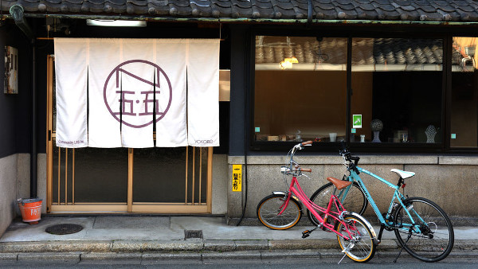

Groving Base
(500m de la station de Gojo, Lien Google Map )
〒600-8449
京都市下京区新町通松原下ル富永町107番地1
107-1 Tominaga-chō, Shimogyō ku,
Kyōto City, Kyōto 〒600-8449